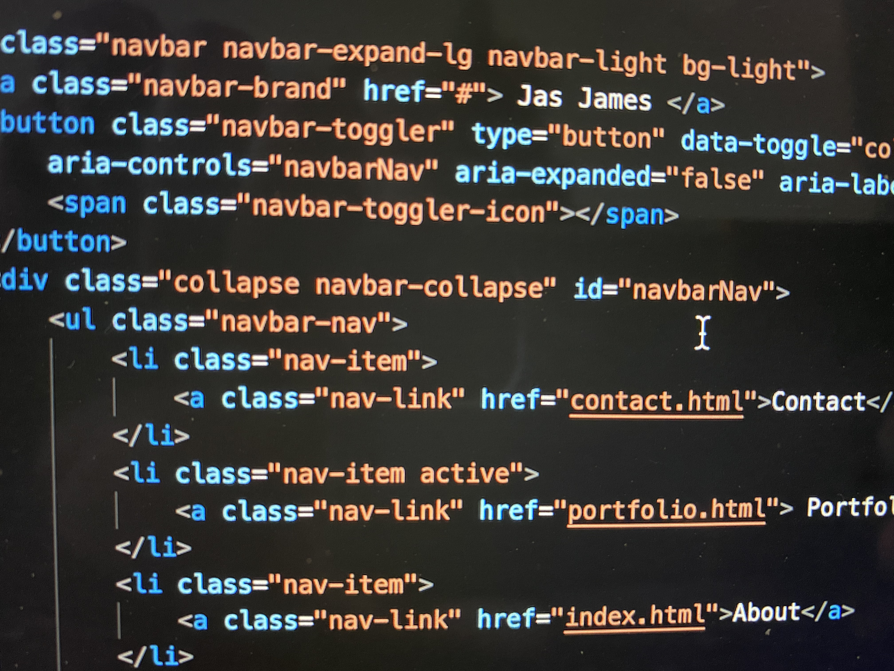
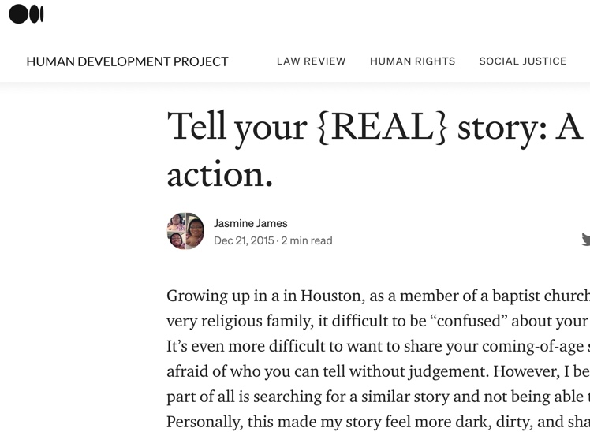
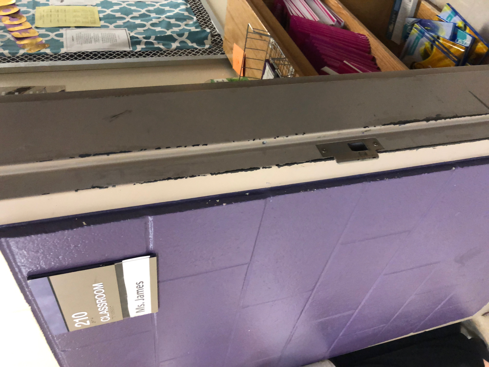
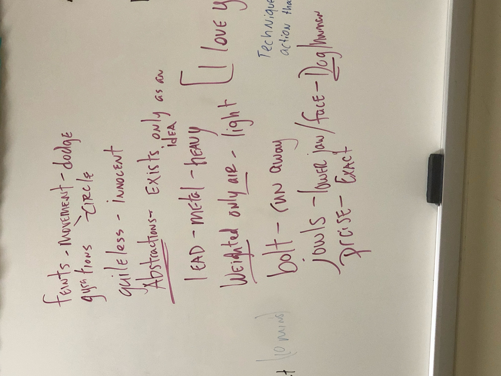
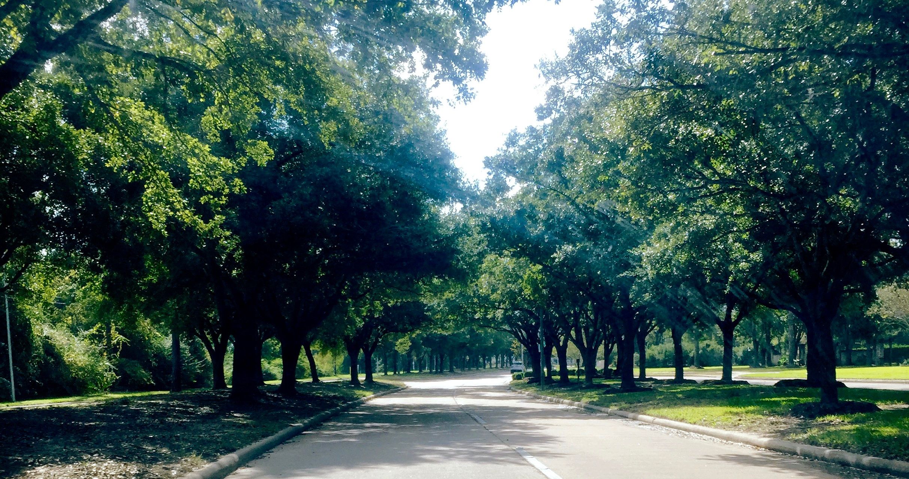
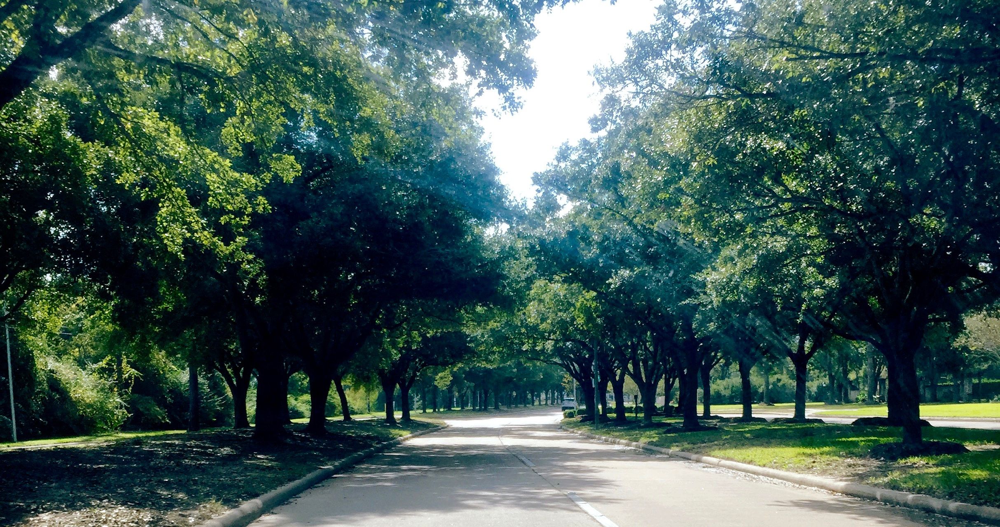

Creative Portfolio
Professional Interests and Expertise
With an undergraduate minor in
Communications-Media Production and MA in Media Studies, design and design-related
course-work were driving forces of my creative journey. Over the past few years, I have
found myself returning to basic HTML and CSS knowledge to design pages from small
businesses as a tertiary (Teaching and Photography being primary and secondary) form of
income. With the Covid-19 pandemic onset, I finally decided to dedicate more time
professionally and make this creative interest a more primary means for fulfilling my
creative passion. I enrolled in the Rice University Coding Boot Camp for Full-Stack
Development.
 Writing will always be a part of
who I am. I have known this for as long as I can remember. I have written creatively,
screenplays, poetry, and novels, primarily, for the last 20 years. Over the previous
five years, I have taught the conventions and importance of writing to high school
students in the greater 5th ward area of Houston, Texas. Due to the pandemic, my tenure
as a school teacher has ended, but my passion for writing can endure anything.
I  have experience in teaching virtual, face-to-face, and small
group environments. Teaching writing and literacy (in the forms of reading, media
literacy, and math literacy) have been an essential part of my life for the last ten
years or more (the last five as a high school teacher, two years as an academic tutor in
a K-12 environment, and as a private tutor before that). Teaching and education in some
form are things that I know will always be an integral part of my life.
 

 Photography.
Photography.